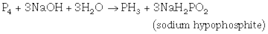
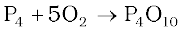
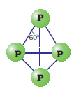
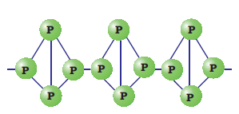

7.6 Phosphorus — Allotropic Forms
Phosphorus is found in many allotropic forms, the important ones being white, red and black.
White phosphorus is a translucent white waxy solid. It is poisonous, insoluble in water but soluble in carbon disulphide and glows in dark (chemiluminescence). It dissolves in boiling NaOH solution in an inert atmosphere giving PH3.

White phosphorus is less stable and therefore, more reactive than the other solid phases under normal conditions because of angular strain in the P4 molecule where the angles are only 60°. It readily catches fire in air to give dense white fumes of P4O10.

It consists of discrete tetrahedral P4 molecule as shown in Fig. 7.2.

Fig. 7.2 White phosphorus
Red phosphorus is obtained by heating white phosphorus at 573K in an inert atmosphere for several days. When red phosphorus is heated under high pressure, a series of phases of black phosphorus is formed. Red phosphorus possesses iron grey lustre. It is odourless, non-poisonous and insoluble in water as well as in carbon disulphide. Chemically, red phosphorus is much less reactive than white phosphorus. It does not glow in the dark.

Fig.7.3: Red phosphorus
It is polymeric, consisting of chains of P4 tetrahedra linked together in the manner as shown in Fig. 7.3.
Black phosphorus has two forms α-black phosphorus and β-black phosphorus. α-Black phosphorus is formed when red phosphorus is heated in a sealed tube at 803K. It can be sublimed in air and has opaque monoclinic or rhombohedral crystals. It does not oxidise in air. β-Black phosphorus is prepared by heating white phosphorus at 473 K under high pressure. It does not burn in air upto 673 K.